04.30.2012 14:41
Google Cloud Storage Part 2
The last time, I showed using Google
Cloud Storage without authentication. This time, I'd like to do
some authenticated work with the data.
Note: You won't have permission to any of what I set up, but hopefully, you can create your own data bucket and with two accounts, try the same. This is a little bit confusing.
You can see your account here: https://code.google.com/apis/console
Click Team. This will get you one way to control who can work with the data. As I'm going to go with the command line route, I haven't tried to see what the GUI will do.
When I go to my storage manager web page (sorry, no good url), this is what I see:
I can click the ghost check mark to "Share Publicly." e.g.
kds_gsdemo2011/data/Selection_006.png [an image from Google Earth]
First, I'm going to activate a virtual env that has the gsutil package in it. See my last tutorial for how I got that set up.
Note: You won't have permission to any of what I set up, but hopefully, you can create your own data bucket and with two accounts, try the same. This is a little bit confusing.
You can see your account here: https://code.google.com/apis/console
Click Team. This will get you one way to control who can work with the data. As I'm going to go with the command line route, I haven't tried to see what the GUI will do.
When I go to my storage manager web page (sorry, no good url), this is what I see:
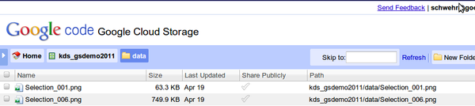
I can click the ghost check mark to "Share Publicly." e.g.
kds_gsdemo2011/data/Selection_006.png [an image from Google Earth]

First, I'm going to activate a virtual env that has the gsutil package in it. See my last tutorial for how I got that set up.
cd ~/virtualenvs/storage source bin/activateNow to try it out. First you need to get your account activated via oauth2. In your default web browser, log into google.com.
gsutil configYou will be presented with a url that you need to go to at google. This will give you a hash string that you will paste back into the command line. You password will never be used when interacting with google storage via the command line. The configuration is stored in a "boto" file in your home directory. boto is a python library for interating with cloud compute and storage services. Check out the readme file to see which ones... there are a lot!
ls -l ~/.boto less ~/.botoIn that file you well see a lot more, but the basics are:
[Credentials] gs_oauth2_refresh_token =Now we need to modify the ACLs (access control lists):
cd tmp gsutil getacl gs://kds_gsdemo2011 > acl.xmlI got back an XML file that looks like this:
<?xml version="1.0" ?>
<AccessControlList>
<Owner>
<ID>00...e1</ID>
</Owner>
<Entries>
<Entry>
<Scope type="GroupById">
<ID>00...e1</ID>
</Scope>
<Permission>FULL_CONTROL</Permission>
</Entry>
<Entry>
<Scope type="GroupById">
<ID>00...21</ID>
</Scope>
<Permission>FULL_CONTROL</Permission>
</Entry>
<Entry>
<Scope type="GroupById">
<ID>00...44</ID>
</Scope>
<Permission>READ</Permission>
</Entry>
</Entries>
</AccessControlList>
I then added my gmail address that I would like to be able to read
the data:
<Entry>
<Scope type="UserByEmail">
<EmailAddress>schwehr@gmail.com</EmailAddress>
<Name>Kurt Schwehr</Name>
</Scope>
<Permission>READ</Permission>
</Entry>
I then pushd that permission definition file back at the Google
Cloud Storage bucket:
gsutil setacl acl.xml gs://kds_gsdemo2011 gsutil ls -l gs://kds_gsdemo2011/data/Selection_001.png gsutil cp gs://kds_gsdemo2011/data/Selection_001.png .I was then able to copy a file from the cloud to my machine.
04.30.2012 13:54
Using Google Cloud Storage - Part 1
This is my first attempt at a
tutorial for Google Cloud Storage.
Using Google Cloud Storage to store data objects (a blob of data of what ever type you want). Right now, you get 5GB of storage for free and you can transfer 20 GB per month. Beyond that, you'll have to check the pricing.
This is pretty much what is on https://developers.google.com/storage/docs/getting-started and https://developers.google.com/storage/docs/hellogooglestorage I've tweaked it a bit to fit my style. I'm doing this on a mac with fink and splitting between two acounts. I want to end up with a way to transfer files from one group to another. I started off by watching this 2011 Google IO video:
Google I/O 2011: Storing Your Application's Data in the Google Cloud
First setting up a virtual env in python to isolate us from messing up any existing python installs.
See Also:
Using Google Cloud Storage to store data objects (a blob of data of what ever type you want). Right now, you get 5GB of storage for free and you can transfer 20 GB per month. Beyond that, you'll have to check the pricing.
This is pretty much what is on https://developers.google.com/storage/docs/getting-started and https://developers.google.com/storage/docs/hellogooglestorage I've tweaked it a bit to fit my style. I'm doing this on a mac with fink and splitting between two acounts. I want to end up with a way to transfer files from one group to another. I started off by watching this 2011 Google IO video:
Google I/O 2011: Storing Your Application's Data in the Google Cloud
First setting up a virtual env in python to isolate us from messing up any existing python installs.
cd ~/Desktop mkdir try-gs cd try-gs fink install virtualenv-py27 virtualenv ve source ve/bin/activate wget http://commondatastorage.googleapis.com/pub/gsutil.tar.gz tar xf gsutil.tar.gz pushd gsutil # gsutil does not have a proper setup.py that will work with virtualenv # so force it to play along perl -pi -e "s|/usr|`pwd`/../ve|g" setup.py python setup.py install popdYou should now have a working virtualenv with gsutil installed in it. Your normal python will not be effective. You will have to rerun the <b>activate</b> from any other shell that you want to have access to gsutil. The virtualenv named "ve" will change your prompt:
$ pwd /Users/schwehr/Desktop/try-gs (ve) $Let's test out setup.
type python # python is hashed (/Users/schwehr/Desktop/try-gs/ve/bin/python) type gsutil # gsutil is /Users/schwehr/Desktop/try-gs/ve/bin/gsutil gsutil --help # lots of help scrolls by # Try a world readable test data set gsutil ls gs://uspto-pair/applications/0800401* # gs://uspto-pair/applications/08004010.zip # gs://uspto-pair/applications/08004011.zip # gs://uspto-pair/applications/08004012.zip # gs://uspto-pair/applications/08004013.zip # gs://uspto-pair/applications/08004016.zip # gs://uspto-pair/applications/08004017.zip # gs://uspto-pair/applications/08004019.zip gsutil ls -l gs://uspto-pair/applications/08004010.zip # 3410 2010-09-29T20:14:15 gs://uspto-pair/applications/08004010.zip # TOTAL: 1 objects, 3410 bytes (3.33 KB) gsutil cp gs://uspto-pair/applications/08004010.zip . md5sum 08004010.zipI have yet to write up using the oauth2 authentication. Hopefully, I'll get that done soon.
See Also:
- http://code.google.com/p/gsutil/
- Issue 92 covers using pypi / pip / distribute / setuptools
04.30.2012 13:20
libais 0.7
After 2 years, I've finally done a
point release of libais. I also put it into pypi. That took me long
enough! I'm still working on my git skillz as Roland and I try to
trade patches. Last Friday, I got my first Google approved open
source patch out the door. It was just one line, but it was a
start.
pypi libais 0.7 entry
Trackback:
2012-05-025: I was surprised to see a mention of this release on SlashGeo - Open Source Geonews: HSLayers, Proxy4OWS, the Worst of OpenStreetMap, AP moving to TileMill + Leaftlet, and more
pypi libais 0.7 entry
git checkout -b release0.7 # lots of hacking make -f Makefile-custom test python setup.py sdist git commit -a -m "proper sdist and go to version 0.7" cd dist wget http://vislab-ccom.unh.edu/~schwehr/software/libais/downloads/libais-0.6.tar.bz2 tar xf libais-0.6.tar.bz2 tar xf libais-0.7.tar.bz2 diff -ruN libais-0.[67] cd .. git format-patch master --stdout > ~/Desktop/libais-prep-0.7.patch # Send the patch for review # Get LGTM git checkout master git merge release0.7 git tag -a v0.7 -m 'version 0.7' git push --tagsThen send it off to pypi.
python setup.py register python setup.py sdist --formats=bztar uploadSee also: https://github.com/schwehr/libais
Trackback:
2012-05-025: I was surprised to see a mention of this release on SlashGeo - Open Source Geonews: HSLayers, Proxy4OWS, the Worst of OpenStreetMap, AP moving to TileMill + Leaftlet, and more
04.30.2012 06:23
schwehr.org
Some of you might have noticed that
schwehr.org dissapeared a week and a half ago. Turns out the
InReach colo had an AC unit meltdown. Scott rescued the hardware
and Justin moved it to an undisclosed secret bunker for the time
being. This last weekend, I visited the hardware and got it online
so that Alex could get it back online. The howling beast is alive
again (Sun V20z). Now we need to figure out a permanent hosting
solution.
IMPORTANT: Attention Oakland Colo Customers. There has been a critical failure of the HVAC system at the Franklin Collocation Center. We are attempting to resolve the situation but we are not meeting with success. The heat is rising in the room and we suggest that all customers monitor their equipment and make the best business decision possible for their mission critical servers and services. We have no ETA at this point on when HVAC will be restored. We will provide more updates here as they become available.
04.19.2012 19:12
My time on Talk of Alaska on NPR Alaska
I just realized that I never blogged
about my "appearance" on talk of Alaska last month. I was visiting
the Google Cambridge, MA offices and they called me in for a 1 hour
discussion show that aired across Alaska. Thanks to Bernie for
dropping me an email durning the show to let me know that he was
hearing me on the radio 
Oil Spill Lessons hosted by Steve Heimel with guests: Kurt Schwehr, Ray Highsmith, and Samantha Joye.
Oil Spill Lessons hosted by Steve Heimel with guests: Kurt Schwehr, Ray Highsmith, and Samantha Joye.
In the 23 years since the tanker Exxon Valdez hit the reef, oil spill prevention has improved greatly in Alaska. Nobody wants another spill. But if it happens will we be ready to respond? Two years ago, a spill in the Gulf of Mexico showed there is still room for improvement.toa-20120320.mp3
04.17.2012 19:41
NOAA NGDC bag web map
Just released this week... NOAA
NGDC's version of visualizing BAGs on a web map.
NOAA releases new views of Earth's ocean floor [noaa news]
http://maps.ngdc.noaa.gov/viewers/bathymetry
You might remember my bag visualizations from a few years ago:
See also:
NOAA Releases New Views of Earth's Ocean Floor [slashdot]
NOAA releases new views of Earth's ocean floor [noaa news]
http://maps.ngdc.noaa.gov/viewers/bathymetry
You might remember my bag visualizations from a few years ago:
See also:
NOAA Releases New Views of Earth's Ocean Floor [slashdot]
04.15.2012 07:56
Fire on the Horizon (book)
I just finished
Fire on the Horizon: The Untold Story of the Gulf Oil Disaster
by Tom Shroder and John Konrad. I've been trying to read this book
since July of last summer, but each time I started, I was just too
close to the topic. I finally just powered through despite my blood
pressure. It was hard enough working on the oil spill from my home
office in New Hampshire. With this book I felt like it was
happening to me on the rig. It's a difficult topic, but it's coming
up on 2 years since the rig cought fire on April 20, 2010.
Wikipedia on the Deepwater Horizon (DWH) oil spill
Wikipedia on the Deepwater Horizon (DWH) oil spill
At approximately 9:45 p.m. CDT, on April 20, 2010, high pressure methane gas from the well expanded into the drilling riser and was released onto the drilling rig, where it ignited and exploded, engulfing the drilling rig. Most of the workers escaped the rig by lifeboat and were subsequently evacuated by boat or airlifted by helicopter for medical treatment; however, eleven workers were never found despite a three-day Coast Guard search operation, and are believed to have died in the explosion. Efforts by multiple ships to douse the flames were unsuccessful. After burning for approximately 36 hours, the Deepwater Horizon sank on the morning of April 22, 2010.
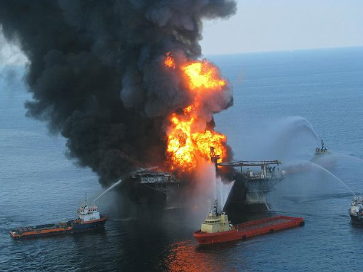
04.13.2012 18:18
Titanic in Google Earth
Tomorrow is the 100th anniversary of
the sinking of the R.M.S. Titanic.
There has been tons of press coverage leading up to this date. I've
been posting some of this on a Google Plus (G+) page: G+ RMS
Titanic. One nice Google Earth example is posted on the Google
Earth Blog (not a part of Google):
The voyage of the Titanic in Google Earth
Today, in honor of the memory of the Titanic, Google released a LatLon blog post, Remembering the Titanic, that includes a tour of the site that is now in the Google Earth Gallery: http://tinyurl.com/titanic-earth-gallery
If you are not familiar with tours, hopefully, this will help. Open up the folders until you see the picture of the camera and "Titanic Tour" that I've circled in yellow below.
I suggest you first sit back and let Jenifer take you on the tour in this Google Oceans YouTube video!
Additionally, the Titanic can now be found via the search window in the top left corner of Google Earth. Make sure to have at least the "Shipwrecks" layer enabled (if not all of them).
There is also an embedded video in the shipwreck popup. Check out all three tabs. Take a look at your favorite parts of the ocean for ship wrecks.
I hope you enjoy the experience of learning some key history. The suffering of the people who were on Titanic led to many improvements that we count on today to be safe while out at sea.
Trackbacks:
Tour the RMS Titanic in Google Earth 3-D! [gCaptain.com] and titanic tag on gCaptain
Google Geonews: Analytics for Google Maps API for Business, Snapping in Panoramio, Titanic in Google Earth, Zombie Survival Map, and much more [slashgeo]
Today, in honor of the memory of the Titanic, Google released a LatLon blog post, Remembering the Titanic, that includes a tour of the site that is now in the Google Earth Gallery: http://tinyurl.com/titanic-earth-gallery
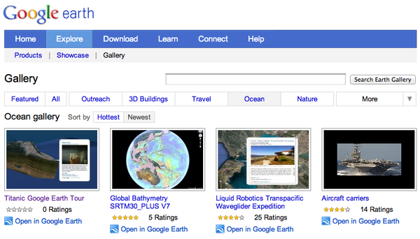
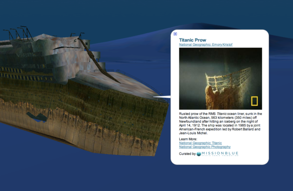
If you are not familiar with tours, hopefully, this will help. Open up the folders until you see the picture of the camera and "Titanic Tour" that I've circled in yellow below.
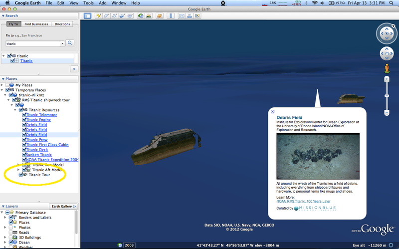
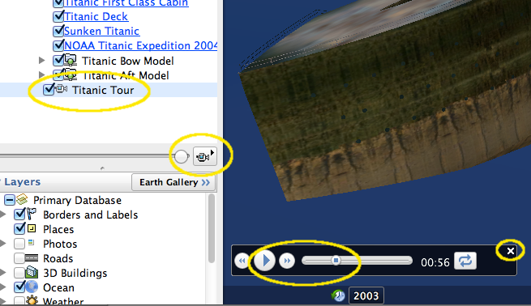
I suggest you first sit back and let Jenifer take you on the tour in this Google Oceans YouTube video!
Additionally, the Titanic can now be found via the search window in the top left corner of Google Earth. Make sure to have at least the "Shipwrecks" layer enabled (if not all of them).
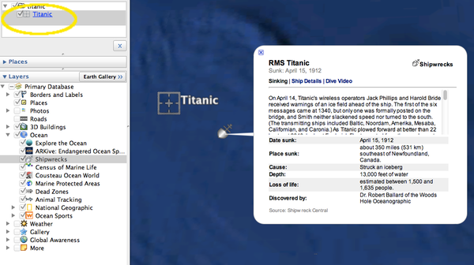
There is also an embedded video in the shipwreck popup. Check out all three tabs. Take a look at your favorite parts of the ocean for ship wrecks.
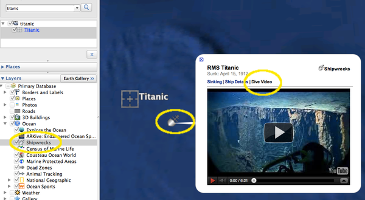
I hope you enjoy the experience of learning some key history. The suffering of the people who were on Titanic led to many improvements that we count on today to be safe while out at sea.
Trackbacks:
Tour the RMS Titanic in Google Earth 3-D! [gCaptain.com] and titanic tag on gCaptain
Google Geonews: Analytics for Google Maps API for Business, Snapping in Panoramio, Titanic in Google Earth, Zombie Survival Map, and much more [slashgeo]
04.12.2012 20:46
NHPR interview about the WhaleAlert app
Brady Carlson made being interviewed
super easy. Here is him interviewing me today for NHPR's All Things Considered:
UNH Smartphone App Helps Ships Avoid Endangered Whales
3:32 run time for the audio
nht041212bc1.mp3 [npr.org]
UNH Smartphone App Helps Ships Avoid Endangered Whales
3:32 run time for the audio
nht041212bc1.mp3 [npr.org]
04.12.2012 11:43
UNH WhaleAlert press release
If you've been following my blog of
the years, you probably have noticed that I have been working on
whale notices over AIS for a long time. I started working on this
back in 2006! Last week, the iOS app came out and it's been getting
great press. Here is the UNH press release to go with all of that.
This has been the effort of many many people to get from ideas to a
working implementation. I am so excited that this is finally in the
hands of anyone who wants it. I've taken the press release that
Beth crafted and added a few web links to it in case you are
interested.
Protecting Whales? Thanks to UNH, There's an App for That [unh.edu]
press:
Want an app to tell you if you're about to run into a whale? UNH helped make it [Nashua Telegraph]
Protecting whales? Thanks to UNH, there's an app for that [Foster's Daily Democrat] (the Dover, NH News Paper)
UNH Smartphone App Helps Ships Avoid Endangered Whales [NHPR ATC]
Protecting Whales? Thanks to UNH, There's an App for That [unh.edu]
Media contact: Beth Potier UNH Media Relations 603-862-1566 beth.potier@unh.edu @unhnews @unhscience April 12, 2012 Reporters and editors: Kurt Schwehr is available at 650-395-7261 or schwehr@ccom.unh.edu. Protecting Whales? Thanks to UNH, There's an App for That DURHAM, N.H. - Researchers at the University of New Hampshire's Center for Coastal and Ocean Mapping (CCOM) helped develop a new iPad and iPhone application that aims to protect critically endangered North Atlantic right whales from collisions with ships. Kurt Schwehr, affiliate assistant professor, research associate professor Lee Alexander, and research scientist Roland Arsenault, led key technical aspects of the WhaleALERT app launched last week. The free app, developed by many partners led by the National Oceanic and Atmospheric Administration (NOAA), sends data about right whale detections directly to an iPhone or iPad on a ship's bridge. The app links whale calls detected by a series of listening buoys to captains transiting the busy shipping lanes in and around Stellwagen Bank National Marine Sanctuary at the mouth of Massachusetts Bay. Numbering between just 350 and 500, North Atlantic right whales are one of the world's most endangered large animals; collisions with ships are a leading cause of right whale deaths. The UNH researchers leveraged their technical experience to translate whale call data collected by acoustic buoys, deployed and developed by Cornell University's Lab of Ornithology, into information that can be quickly accessed by busy mariners. "We grab the data, push it through a minefield of confusing standards and techno-babble, and get it to people," says Schwehr, who is also a GIS data engineer for Oceans at Google. Schwehr and Arsenault worked to ensure that the app can use Automatic Identification System (AIS), a communication system onboard all ships, as well as Internet (wireless or satellite) or 3G networks to deliver information about right whales in the vicinity and right whale conservation measures. Imagine, Schwehr says, you're driving down the highway and you receive a cell phone call that delivers warning of an accident ahead global positioning system coordinates. While continuing to drive, you must write down the coordinates and find them on a map to determine where the accident is and how you can avoid it. "Now imagine your car is 900 feet long," he says, noting the difficulty of maneuvering a ship. WhaleALERT transmits the location of any whales directly to a relatively inexpensive and ubiquitous device making it easier for ships to take action. "This is a huge leap forward in terms of giving this information to mariners in a way that's part of their daily routine," he says, noting that a ship's bridge is a busy place and among the many pressures facing mariners, avoiding whales might be a lower priority. "It has to be easy to use." The CCOM contribution to WhaleALERT was developed as part of CCOM's Chart of the Future project, a NOAA-funded effort that fuses marine technology with data visualization to maximize mariner safety and efficiency of navigation. Schwehr says WhaleALERT is just one of many possible applications of the software the CCOM team developed. "My hope is that with the software being open-source and the app being free, this could be used for many situations," he says, including avoiding other endangered marine mammals (manatees are an example) or keeping watch for marine debris or oil spills. "UNH and CCOM are trying to be an enabler for people around the world to solve their own problems." Alexander and Schwehr worked to get the AIS message used for the whale notices accepted into an international standard with the International Maritime Organization (IMO), thereby ensuring that the technology can be used anywhere in the world. WhaleALERT has been developed by a collaboration of government agencies, academic institutions, nonprofit conservation groups and private sector industries, led by scientists at NOAA's Stellwagen Bank National Marine Sanctuary. In addition to UNH, collaborating organizations include the sanctuary, Bioacoustics Research Program at Cornell University, EarthNC, Excelerate Energy, EOM Offshore, Gaia GPS, International Fund for Animal Welfare, Massachusetts Port Authority, NOAA Fisheries Service, National Park Service, Cape Cod National Seashore, NYK Lines (North America), United States Coast Guard and the Woods Hole Oceanographic Institution. Learn more about WhaleALERT here: http://www.noaanews.noaa.gov/stories2012/20120404_whale_app.html. Download the app from the iTunes store here: http://itunes.apple.com/us/app/whale-alert-ship-strike-reduction/id511707112?mt=8&ls=1. Learn more about UNH's Center for Coastal and Ocean Mapping here: www.ccom.unh.edu. The University of New Hampshire, founded in 1866, is a world-class public research university with the feel of a New England liberal arts college. A land, sea, and space-grant university, UNH is the state's flagship public institution, enrolling 12,200 undergraduate and 2,300 graduate students. -30- Images available to download: http://www.noaanews.noaa.gov/stories2012/images/Whale-Alert-screen-view-April-2012-full.jpg Caption: WhaleALERT iPad display as seen by a mariner approaching Boston Harbor. Credit: NOAA http://www.noaanews.noaa.gov/stories2012/images/whalealert_icon_v01_02_512x512.jpg Caption: WhaleALERT, a free app for iPads and iPhones, can be downloaded from the iTunes store. Credit: NOAAHere are two photos that Jake Levenson of IFAW shared with me that show the iPad version of the app on the bridge of a ship.
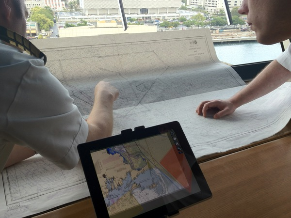
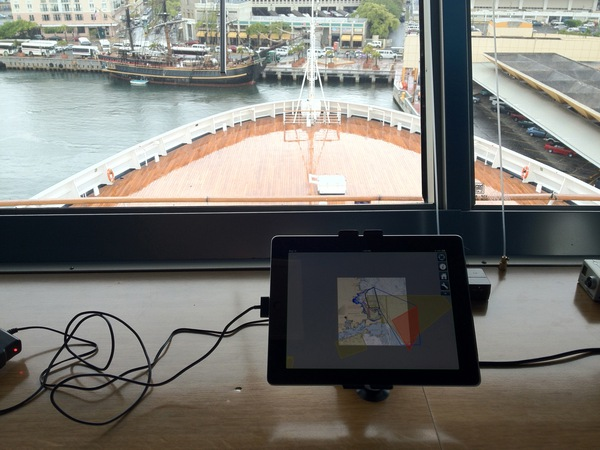
press:
Want an app to tell you if you're about to run into a whale? UNH helped make it [Nashua Telegraph]
Protecting whales? Thanks to UNH, there's an app for that [Foster's Daily Democrat] (the Dover, NH News Paper)
UNH Smartphone App Helps Ships Avoid Endangered Whales [NHPR ATC]
04.05.2012 16:21
Audio from today's CCOM seminar
Brad Winney and Virgil Zetterlind of
EarthNC gave a nice talk today at CCOM. I only got to attended
remotely. Here is the audio. I worked with EarthNC and GaiaGPS to
build the Whale Alert iOS app (with Roland taking over my role).
Virgil and I have known each other for quite a few years.
2012-Apr-05-earthnc-ccom-seminar.mp3
2012-Apr-05-earthnc-ccom-seminar.mp3
04.04.2012 19:06
Whale Alert iPad app time lapse
Watching these things in real time is
like watching the grass grow. Here is 9 hours of me hitting the
screen capture on the ipad every so often. Time does not move
linearly. Keep your eye on the time displayed on the top center.
This app was released to the public yesterday and has libais in it
to decode AIS messages if you are out in the area around Cape Cod
in your vessel.
04.04.2012 12:54
Right whale AIS iPad/iPhone app
http://www.noaanews.noaa.gov/stories2012/20120404_whale_app.html
Apple App store link to Whale Alert
New iPad, iPhone App Helps Mariners Avoid Right Whales [MarineLink.com]
Weird & Wild: New App Tracks Rare Whales With iPhone and iPad [National Geographic]
New App Helps Ship Captains Avoid Hitting Endangered Whales [WBUR Boston Radio]
App aims to spare whales from ships in Atlantic [SeaCoast Online/AP]
New iPad, iPhone app helps mariners avoid endangered right whales Mariners along the U.S. east coast can now download a new iPad and iPhone application that warns them when they enter areas of high risk of collision with critically endangered North Atlantic right whales. The free Whale Alert app provides one source for information about right whale management measures and the latest data about right whale detections, all overlaid on NOAA digital charts. "Whale Alert represents an innovative collaboration to protect this critically endangered species," said David Wiley, s Stellwagen Bank National Marine Sanctuary research coordinator and project lead. "Whale conservation is greater than any one organization and this project shows how many organizations can unite for a good cause." A key feature of Whale Alert is a display linking near real-time acoustic buoys that listen for right whale calls to an iPad or iPhone on a s bridge showing the s presence to captains transiting the shipping lanes in and around Stellwagen Bank National Marine Sanctuary. "The idea that right whales are directly contributing to conservation through their own calls is pretty exciting," said Christopher Clark, whose team at the Bioacoustics Research Program at the Cornell Lab of Ornithology helped develop the acoustic detection and warning system. North Atlantic right whales, which live along North s east coast from Nova Scotia to Florida, are one of the s rarest large animals and a species on the brink of extinction. Recent estimates put the population of North Atlantic right whales at approximately 350 to 550 animals. Collision with ships is a leading cause of right whale death. "Massport is proud to be part of this effort. We are working with our cruise and shipping vessel partners to educate mariners about the whales, and the importance of this great new tool," said Michael Leone, port director for the Massachusetts Port Authority. "The maritime community has always sought ways to increase right whale survival. Whale Alert does this by using science and technology to let mariners know where their vessel is in relation to the whales and conservation measures." The link to the listening network is only part of what Whale Alert does. The app uses GPS, Automatic Identification System, Internet and digital nautical chart technologies to alert mariners to s right whale conservation measures that are active in their immediate vicinity. NOAA, through its NOAA Fisheries Service, is the U.S. agency with responsibility for protecting and recovering this endangered species. "Endangered right whales are particularly vulnerable to being hit and killed by ships, but we can save them," said Patrick Ramage, global whale director for the International Fund for Animal Welfare and one of the collaborators on Whale Alert. "Right whales need dramatic conservation progress to survive. This new iPad app gives these whales a fighting chance." "The app also moves whale conservation into the 21st century," said Brad Winney co-founder of EarthNC, the developer of the Whale Alert mobile application. "Whale Alert highlights the powerful role today's web and mobile based technologies can have in the preservation efforts of endangered species worldwide." Whale Alert has been developed by a collaboration of government agencies, academic institutions, non-profit conservation groups and private sector industries, led by scientists at s Stellwagen Bank National Marine Sanctuary. Collaborating organizations include the sanctuary, Bioacoustics Research Program at Cornell University, Center for Coastal and Ocean Mapping at the University of New Hampshire, EarthNC, Excelerate Energy, EOM Offshore, Gaia GPS, International Fund for Animal Welfare, Massachusetts Port Authority, NOAA Fisheries Service, National Park Service, Cape Cod National Seashore, NYK Lines (North America), United States Coast Guard and the Woods Hole Oceanographic Institution. Whale Alert can be downloaded free of charge from the App store. More information on Whale Alert and the groups responsible for its development can be found at http://stellwagen.noaa.gov/protect/whalealert.htmlSee also:
Apple App store link to Whale Alert
New iPad, iPhone App Helps Mariners Avoid Right Whales [MarineLink.com]
Weird & Wild: New App Tracks Rare Whales With iPhone and iPad [National Geographic]
New App Helps Ship Captains Avoid Hitting Endangered Whales [WBUR Boston Radio]
App aims to spare whales from ships in Atlantic [SeaCoast Online/AP]
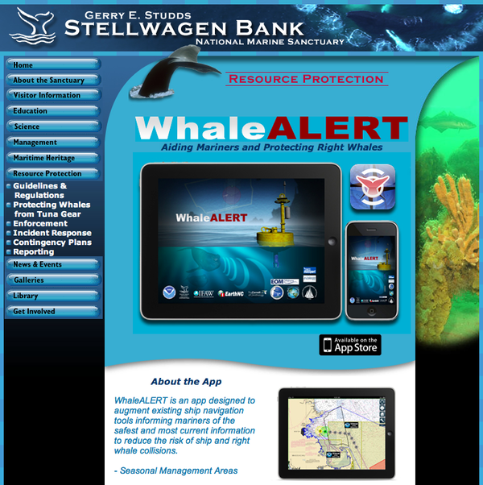
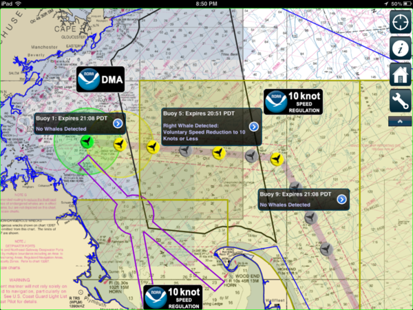
04.03.2012 22:17
Chikyu JFAST first video
Drilling Into
The Tsunami - An Update From The Chikyu [gCaptain]
And from last fall: Damaged by the Tsunami, A Drillship Fights Back [gCaptain]
And from last fall: Damaged by the Tsunami, A Drillship Fights Back [gCaptain]
04.02.2012 21:22
JFAST project on station
The Chikyu just arrived in the last
couple hours on station where they will be drilling for the JFAST
project.
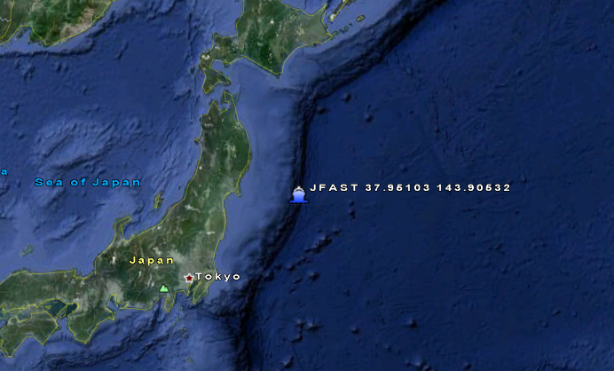
04.02.2012 20:36
Verified VDatum transformation
I finally have a vdatum
transformation that I have a way to verify. I had started out
creating a KML of the Epoch tables for all of the tide stations in
the United States.
I pulled the tide station locations and use that as a list of station positions and station ids so that I could get the Epoch table. Unfortunetly, those tables are in feet (booo! no SI?). But how do I get from Mean Lower Low Water to NAVD88? e.g.
epoch_datum_check.shtml?stnid=9410230
Then, Barry pointed me to a benchmark page for a station and things made more sense!
Bench Mark Data Sheets La Jolla, CA Station ID: 9410230
I can see that there is a consistant 1.33 meter offset between the Epoch table and the SIO benchmark info. The best part is that I have the difference between NAVD88 and MLLW, which is 0.058 meters. I brought up VDatum 2.3.3 and gave it a try. It's off by less than 1mm. I'll take that! One good earthquake could provide more error than that!
I'm feeling more comfortable with my VDatum transformations! I've still got a lot of work to do before I've got the whole process nailed down, but there is nothing like getting a first successful check. I'm making the assumption that the surveyors for the benchmark have this process pretty well nailed down.
Trackback:
Batch Geonews: Landsat 5 Suspended, Wikipedia Mobile Switch to OpenStreetMap, Your Facebook Connections Map, Vertical Datums, and much more [slashgeo]
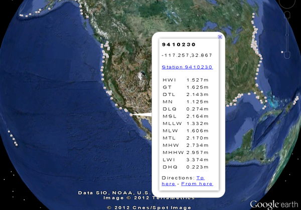
I pulled the tide station locations and use that as a list of station positions and station ids so that I could get the Epoch table. Unfortunetly, those tables are in feet (booo! no SI?). But how do I get from Mean Lower Low Water to NAVD88? e.g.
epoch_datum_check.shtml?stnid=9410230
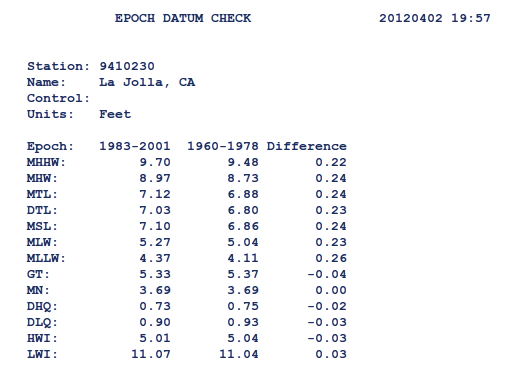
Then, Barry pointed me to a benchmark page for a station and things made more sense!
Bench Mark Data Sheets La Jolla, CA Station ID: 9410230
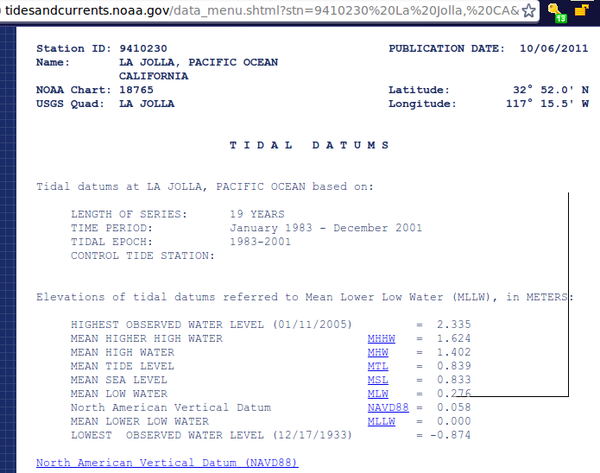
I can see that there is a consistant 1.33 meter offset between the Epoch table and the SIO benchmark info. The best part is that I have the difference between NAVD88 and MLLW, which is 0.058 meters. I brought up VDatum 2.3.3 and gave it a try. It's off by less than 1mm. I'll take that! One good earthquake could provide more error than that!
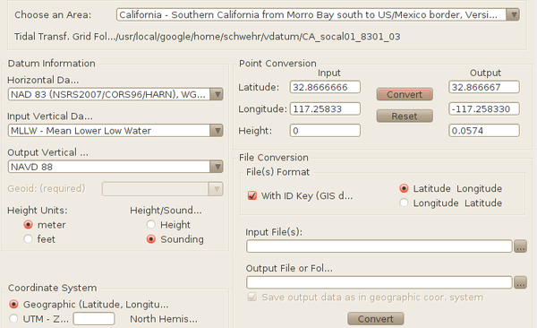
I'm feeling more comfortable with my VDatum transformations! I've still got a lot of work to do before I've got the whole process nailed down, but there is nothing like getting a first successful check. I'm making the assumption that the surveyors for the benchmark have this process pretty well nailed down.
Trackback:
Batch Geonews: Landsat 5 Suspended, Wikipedia Mobile Switch to OpenStreetMap, Your Facebook Connections Map, Vertical Datums, and much more [slashgeo]